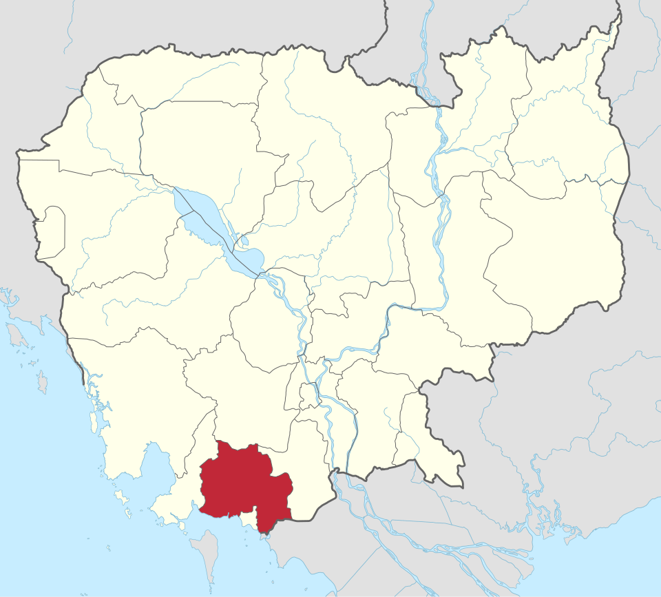
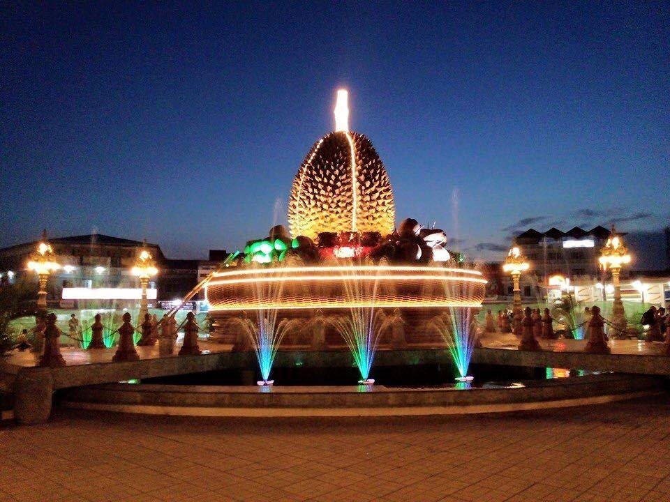
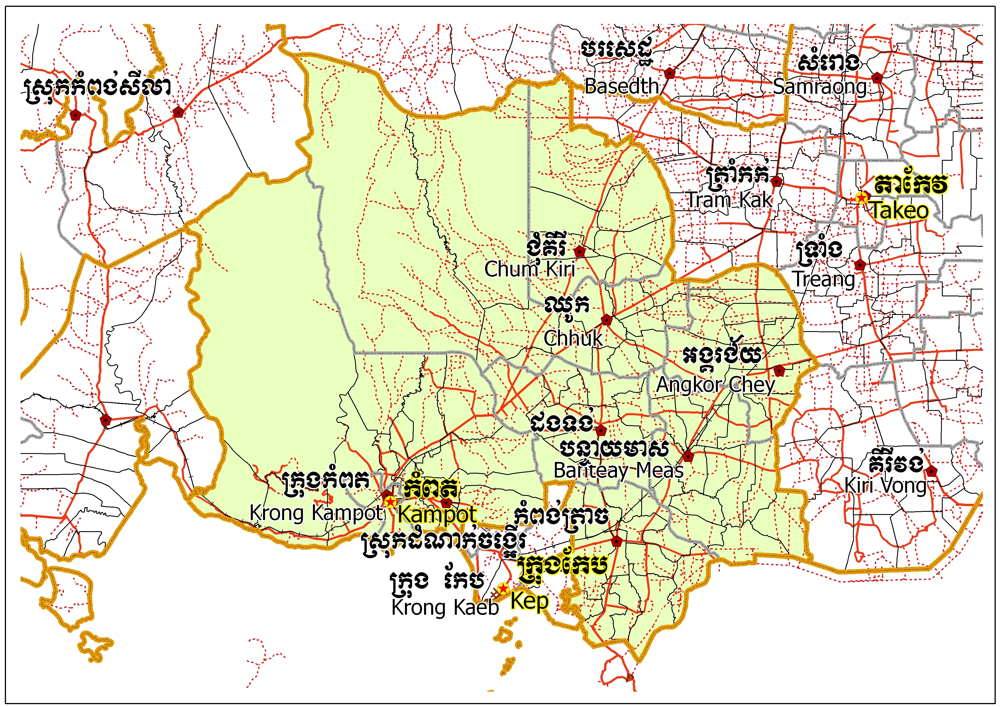
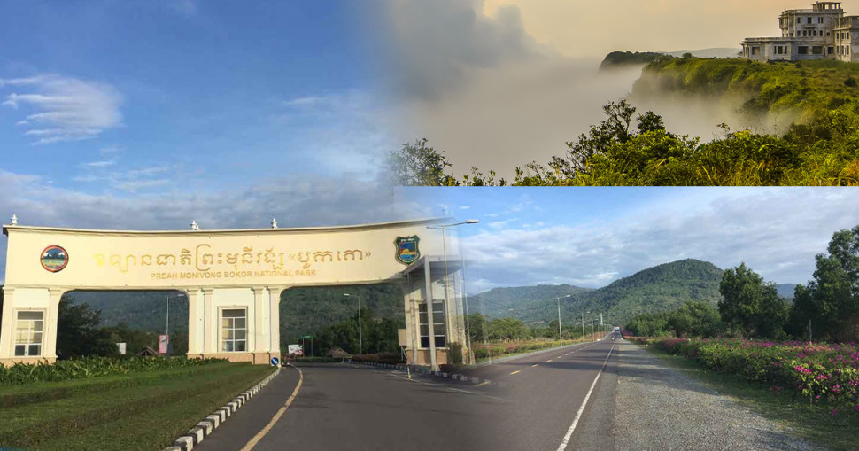
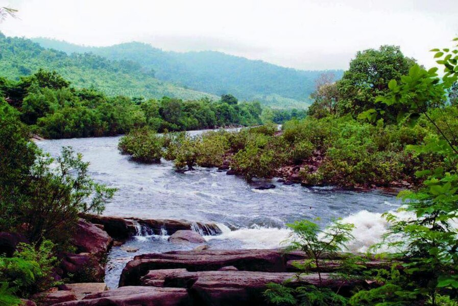
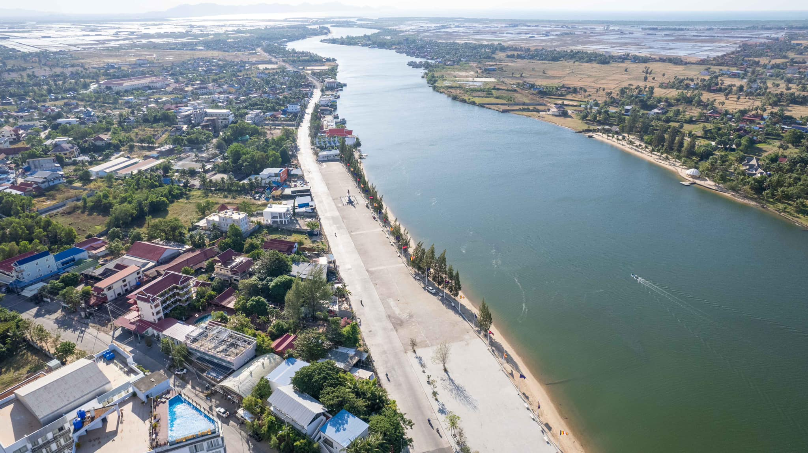

Kampot
← ត្រឡប់ទៅផែនទីខេត្តកំពត គឺជាខេត្តមួយស្ថិតនៅប៉ែកខាងត្បូងនៃប្រទេសកម្ពុជា ដែលមានចម្ងាយ ១៤៨ គ.ម. ពីទីក្រុងភ្នំពេញ មានព្រំប្រទល់ខាងជើងទល់នឹងស្រុកបរសេដ្ឋ ខេត្តកំពង់ស្ពឺ ខាងកើតជាប់នឹងស្រុកត្រាំកក់ និង ស្រុកគីរីវង់ ខេត្តតាកែវ ខាងត្បូងជាប់នឹងឈូងសមុទ្រ ខាងលិចជាប់នឹងស្រុកកំពង់សិលា និងស្រុកព្រៃនប់ ខេត្តព្រះសីហនុ ដូចគ្នាដែរ ខ្សែឆ្នេរដ៏វែងស្ថិតនៅលើឈូងសមុទ្រថៃទៅខាងត្បូង ខេត្តកំពតមានទីក្រុងឈ្មោះក្រុងកំពត។ កំពតមានប្រជាជន ៦២៧ ៨៨៤ នាក់ និងប្រកបដោយស្រុកនិងក្រុងចំនួនប្រាំបីដែលបានចែកទៅជាឃុំ-សង្កាត់ ៩២ ជាមួយនិងភូមិសរុប ៤៧៧ ភូមិ។ ខេត្តកំពតមានសំណង់ប្រវត្តិសាស្រ្តជាច្រើនដូចជា ផ្ទះ ផ្សារលក់ទំនិញ រោងភាពយន្ត សាលារៀន ផ្លូវគមនាគមន៏ មន្ទីរពេទ្យជាដើម សុទ្ធសឹងជាភស្ដុតាង]បង្ហាញឱ្យឃើញពីការចាប់អារម្មណ៍របស់ពួកបារាំងទៅលើទឹកដីខ្មែរខេត្តកំពតមួយនេះ។ហើយក៏មានភ្នំបូកគោដែលជាទីចាប់អារម្មណ៍របស់ភ្ញៀវទេសចរណ៍ជាតិ និងអន្តរជាតិគ្រប់ៗរូបផងដែរ។ នៅលើនោះក៏មានកាស៊ីណូ និង មាន កន្លែងកម្សាន្តជាច្រើនដូចជា៖ វាលស្រែមួយរយ ទឹកធ្លាក់អាចមើលទេសភាព មកខាងក្រោមយ៉ាងស្រស់ស្អាត អាចចាប់ពពកបាន។-ល-។ ស្រុកទូកមាសបានតាំងទីនៅខេត្តកំពត។ទេសភាពនៃព្រែកកំពត មើលពីក្រុងកំពត ក្បែរសាលាខេត្ត ចំពីមុខភ្នំបូកគោ។ ខេត្ដតាកែវ បានចូលដែនរដ្ឋបាលខេត្ដកំពត នៅត្រង់ស្រុកជុំគី ត្រង់ចំនុចវត្ដពុទ្ធគីរី រហូតដល់ រមណីយដ្ឋានកំពូលពេជ្រ។

ខេត្តកំពតស្ថិតនៅភាគនិរតីនៃប្រទេសកម្ពុជា មានចម្ងាយ ១៤៨ គីឡូម៉ែត្រពីរាជធានីភ្នំពេញ។ ខេត្តនេះមានសក្ដានុពលសេដ្ឋកិច្ច និងទេសចរណ៍ខ្ពស់ ដោយសារមានព្រំប្រទល់ជាប់សមុទ្រ តំបន់ខ្ពង់រាប តំបន់វាលទំនាប និងជាតំបន់សម្បូរទៅដោយធនធានធម្មជាតិ និងកសិកម្ម។ ខាងក្រោមនេះ គឺជាការបែងចែកលក្ខណៈភូមិសាស្រ្តសំខាន់ៗរបស់ខេត្តកំពត៖ព្រំប្រទល់រដ្ឋបាល៖ខាងជើង៖ ជាប់នឹងខេត្តកំពង់ស្ពឺ និងខេត្តព្រះសីហនុខាងកើត៖ ជាប់នឹងស្រុកមួយចំនួនរបស់ខេត្តតាកែវខាងត្បូង៖ ជាប់នឹងខេត្តកែប ប្រទេសវៀតណាម និងឈូងសមុទ្រថៃខាងលិច៖ ជាប់នឹងខេត្តព្រះសីហនុ និងឈូងសមុទ្រថៃសណ្ឋានដី និងភូមិសាស្ត្រ៖ប៉ែកខាងលិច៖ ជាតំបន់ជួរភ្នំខ្ពស់ៗ ដូចជាឧទ្យានជាតិព្រះមុនីវង្ស (ភ្នំបូកគោ) ដែលជាតំបន់អភិរក្សធម្មជាតិ និងមានអាកាសធាតុត្រជាក់។ប៉ែកខាងជើង៖ ជាតំបន់ខ្ពង់រាប មានព្រៃរបោះ និងតំបន់ថ្មកំបោរ ដែលជាប្រភពវត្ថុធាតុដើមសម្រាប់ផលិតស៊ីម៉ងត៍។ប៉ែកខាងកើត៖ ជាតំបន់វាលទំនាបរាបស្មើ មានបណ្តាញផ្លូវទឹក និងព្រែកហូរស្រោចស្រព អំណោយផលដល់វិស័យកសិកម្ម ដូចជា ការដាំស្រូវ និងម្រេចកំពត។ប៉ែកខាងត្បូង៖ ជាតំបន់ឆ្នេរសមុទ្រលាតសន្ធឹងប្រវែង ៧៦ គីឡូម៉ែត្រ មានសក្ដានុពលខ្លាំងលើការធ្វើស្រែអំបិល ការនេសាទ ការដឹកជញ្ជូនតាមកំពង់ផែទេសចរណ៍អន្តរជាតិ និងតំបន់កម្សាន្តកោះនានា។


ខេត្តកំពត ត្រូវបានចែកចេញជាក្រុងចំនួន ២ និងស្រុកចំនួន ៨
ឧទ្យានជាតិព្រះមុនីវង្ស (ភ្នំបូកគោ) ជារមណីយដ្ឋានធម្មជាតិ និងប្រវត្តិសាស្ត្រដ៏ល្បីល្បាញ ស្ថិតក្នុងខេត្តកំពត មានចម្ងាយប្រមាណ ១៩០ គីឡូម៉ែត្រពីរាជធានីភ្នំពេញ។ កំពូលភ្នំមានកម្ពស់ ១.០៧៥ ម៉ែត្រ ផ្តល់នូវអាកាសធាតុត្រជាក់ អ័ព្ទព័ទ្ធជុំវិញ និង ទេសភាពធម្មជាតិដ៏ស្រស់ត្រកាល។ទីតាំង៖ ស្រុកទឹកឈូ ខេត្តកំពត (ចម្ងាយ ១១ គីឡូម៉ែត្រពីក្រុងកំពតទៅជើងភ្នំ និង ២៣ គីឡូម៉ែត្រពីជើងភ្នំដល់កំពូលភ្នំ)។ កម្ពស់៖ ១.០៧៥ ម៉ែត្រ ធៀបនឹងនីវ៉ូទឹកសមុទ្រ។ប្រវត្តិសាស្ត្រ៖ ត្រូវបានរៀបចំឡើងជាតំបន់ទេសចរណ៍ នាថ្ងៃទី១៣ ខែមេសា ឆ្នាំ១៩២២ ក្នុងរជ្ជកាលព្រះបាទស៊ីសុវត្ថិ ដោយជនជាតិបារាំងឈ្មោះ រូលួស។ ទីតាំង៖ ស្រុកទឹកឈូ ខេត្តកំពត (មានចម្ងាយប្រមាណ ១១ គីឡូម៉ែត្រពីក្រុងកំពតទៅកាន់ជើងភ្នំ)។កម្ពស់៖ ១០៧៥ ម៉ែត្រ។ប្រវត្តិសាស្ត្រ៖ ត្រូវបានរៀបចំឡើងជាស្ថានីយ៍កម្សាន្តតាំងពីឆ្នាំ១៩២២ ក្នុងសម័យអាណានិគមបារាំង។បេតិកភណ្ឌ៖ ជាផ្នែកមួយនៃឧទ្យានបេតិកភណ្ឌអាស៊ានតែមួយគត់នៅប្រទេសកម្ពុជា។ ស្ថានីយភ្នំបូកគោ (Bokor Hill Station)៖ សំណង់អគារចាស់ៗសម័យបារាំង (ដូចជាសណ្ឋាគារចាស់ និងកាស៊ីណូ)។ព្រះវិហារចាស់កាតូលិក៖ ជាទីតាំងសាសនាដ៏ចំណាស់មួយនៅលើកំពូលភ្នំ។ រូបសំណាកលោកយាយម៉ៅ៖ កន្លែងគោរពបូជាដ៏ស័ក្តិសិទ្ធិ និងមានទេសភាពជួរភ្នំយ៉ាងស្រស់ស្អាត។ទឹកជ្រោះប៉ប៉កិវ៉ាត់ (Popokvil Waterfall)៖ ទឹកជ្រោះធម្មជាតិដ៏ស្រស់ស្អាត មានទឹកហូរធ្លាក់កាត់ផ្ទាំងថ្ម។វាលស្រែ ៥០០៖ ជាវាលស្មៅធំល្វឹងល្វើយមានផ្ទាំងថ្មតូចធំ និងទេសភាពធម្មជាតិប្លែកភ្នែក។


តំបន់ទឹកឈូ ស្ថិតក្នុងស្រុកទឹកឈូ ខេត្តកំពត មានចម្ងាយប្រមាណ ៨ គីឡូម៉ែត្រពីក្រុងកំពត。 ក្រៅពីការកម្សាន្តតាមទឹកជ្រោះធម្មជាតិ ទីតាំងនេះត្រូវបានពង្រីកសក្ដានុពលដល់ការទាក់ទាញ កសិទេសចរណ៍ (Agrotourism) យ៉ាងសម្បូរបែប ដូចជាចម្ការម្រេច និងដំណាំហូបផ្លែ ដែលផ្ដល់បទពិសោធន៍ដ៏កក់ក្តៅដល់ទេសចរ កន្លែងកម្សាន្ត និងសកម្មភាពស្នូលនៅទឹកឈូរមណីយដ្ឋានទឹកឈូ មានប្រវត្តិយូរលង់ជាងគេបង្អស់បន្ទាប់ពីឧទ្យានជាតិភ្នំបូកគោ។ការងូតទឹក និងលំហែកាយ៖ ទេសចរអាចងូតទឹកថ្លាឈ្វេង លេងកម្សាន្តកាត់តាមផ្ទាំងថ្មដា និងពិសារអាហារនៅតាមខ្ចុះ ឬតូបប្របមាត់ទឹក។ដំណាំហូបផ្លែ៖ តំបន់នេះអមដោយចម្ការដំណាំហូបផ្លែ ជាពិសេសគឺ ចម្ការទុរេនដ៏ល្បីល្បាញប្រចាំខេត្តកំពត។សកម្មភាពផ្សេងទៀត៖ មានសួនសត្វ ក៏ដូចជាសកម្មភាពកម្សាន្តក្នុងទឹកដូចជា ការជិះទូក និងជិះក្តាររំអិល។
ខេត្តកំពតជាខេត្តមួយស្ថិតនៅតំបន់ឆ្នេរ ដែលជាខេត្តគោលដៅដ៏ទាក់ទាញមួយសម្រាប់ទេសចរទៅកម្សាន្ត។ ខេត្តកំពតមានលក្ខណៈភូមិសាស្ត្រអំណោយផលយ៉ាងច្រើន ជាពិសេសលើធនធានធម្មជាតិដែលមានឆ្នេរសមុទ្រ ស្ទឹង ព្រែក កោះ ឧទ្យានជាតិ អាគារបេតិកភណ្ឌ រួមទាំងដំណំាឈើហូបផ្លែដ៏មានឱជារស។ ខេត្តកំពតមានឆ្នេរសមុទ្រជាប់នឹងដីគោកប្រវែង ៥៥,៦៦ គីឡូម៉ែត្រ។ នេះបើតាមឯកសាររបស់គណៈកម្មាធិការជាតិគ្រប់គ្រង និងអភិវឌ្ឍតំបន់ឆ្នេរសមុទ្រកម្ពុជា។ ឆ្នេរក្នុងខេត្តកំពតចែកចេញជា ៥ ប្រភេទ ក្នុងនោះមាន៖
